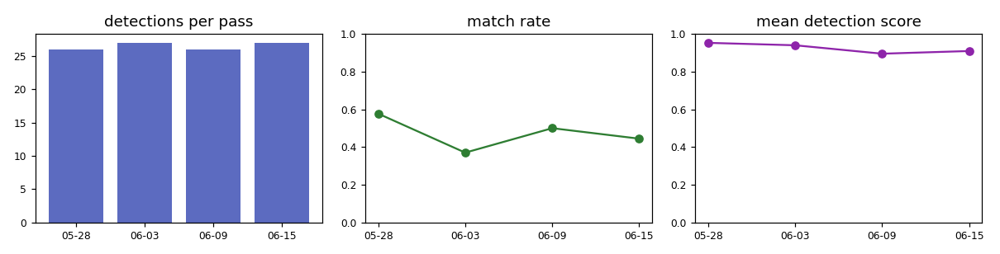

Ships seen by radar that were not publicly tracked
Latest pass: S1-demo-4. Candidates are for human review, not verdicts or accusations.
Read before trusting a flag. "Not tracked" is not "switched off". Free AIS comes from coastal receivers that
reach roughly 18 km offshore, many boats carry no public AIS at all, and ships under ~40 m are not reliably seen.
Orange = low confidence (beyond receiver range, or the AIS feed had a gap). Demo data is synthetic.
matched to AIScandidate (high confidence)candidate (low confidence)
Pass log
| pass |
time (UTC) |
detections |
matched |
candidates |
low conf. |
match rate |
AIS msgs |
feed gap s |
| S1-demo-1 |
2026-05-28 20:26 |
26 |
15 |
11 |
5 |
0.58 |
483 |
0.0 |
| S1-demo-2 |
2026-06-03 20:26 |
27 |
10 |
17 |
6 |
0.37 |
321 |
0.0 |
| S1-demo-3 |
2026-06-09 20:26 |
26 |
13 |
13 |
2 |
0.50 |
398 |
0.0 |
| S1-demo-4 |
2026-06-15 20:26 |
27 |
12 |
15 |
15 |
0.44 |
225 |
1500.0 |
Monitoring
